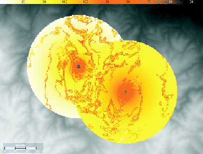

Siguiente: Variación de las características
Subir: Ejemplos de aplicación
Anterior: Ejemplos de aplicación
Índice General
Como primer ejemplo de aplicación se considerarán dos radiobases con
antenas isotrópicas ubicadas geográficamente en distintos sitios de
una superficie ondulada.
Figura 11.1:
Valores de potencia
|

|
En la práctica, este escenario correspondería a una zona rural dada
la ausencia de edificaciones y calles.
En la figura 11.1 se muestra el resultado de una
predicción al asociarle a ambas antenas el modelo de Okumura-Hata
COST231 (considerando alturas efectivas) con una frecuencia de
transmisión de 900 MHz. Observando dicha figura y tomando en
consideración los parámetros involucrados en el cálculo de la
pérdida de camino del modelo de Okumura-Hata COST231, se puede
verificar que es notoria la dependencia del valor de la potencia
mediana de señal con la distancia, con la altura del terreno y con
las alturas del transmisor y receptor. La antena ubicada en la
figura a la derecha se encuentra a una mayor altura respecto a la
otra y esto se refleja en la obtención de mayores valores de señal
en la zona de estudio, los cuales decrecen a medida que se alejan de
las radiobases. Se puede observar también que en aquellos puntos
donde existe intersección entre los radios de cálculo de ambas
antenas, el valor de potencia desplegado es el mayor. Un valor
aproximado de la potencia puede estimarse al observar la barra
superior que muestra la escala en dB.
Como se describió en la sección 7.5, otros cálculos
pueden resultar útiles al trabajar con más de un antena, como ser la
interferencia co-canal entre ellas o el área de cobertura conformada
por la totalidad de las antenas involucradas en la predicción.
Tomando el mismo ejemplo que se describió anteriormente, se muestra
en la figura 11.2 la CIR resultante entre las dos
antenas luego de realizada la predicción.
Figura 11.2:
CIR y cobertura
|
|
En la imagen derecha de la figura 11.2 se despliegan
aquellos valores de potencia que quedaron por encima del umbral
definido en la sensibilidad del receptor (color naranja) y de
acuerdo al valor de C/I mínima definida previamente en el perfil de
usuario. A esta región es a lo que se considera área de servicio, y
también se despliegan aquellos valores donde se considera que el
móvil no captará señal (color amarillo).
Siguiente: Variación de las características
Subir: Ejemplos de aplicación
Anterior: Ejemplos de aplicación
Índice General
SAPO